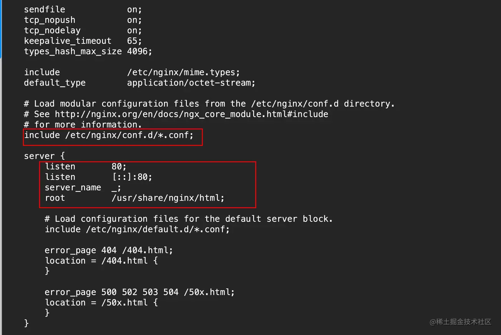

nginx
下载和启动
CentOS系统自带yum,通过它这里直接下载nginx,具体命令如下:
1.2.3.4.//下载nginxyum install nginx//启动nginx //直接启动，然后通过公网ip就可以获取到nginx的页面了配置
nginx下载完成以后的主要存储位置在/etc/nginx,这个是nginx配置文件存储的位置,/usr/share/nginx,这个主要放前端项目的地方
1.2.3.4.5.6.7.8.9.10.11.12.13.14.15.16.17.18.19.20.21.//主要的配置文件就存在/etc/nginx/nginx.conf//通过下图中红框的include可设置具体的配置文件路径以及文件名特征//像图片中的include是说,所有conf.d下面以conf为后缀的文件都是配置文件//下面server表示配置服务//listen监听端口,默认80//root表示访问80端口的时候映射哪的文件给客户端 //可以自己在conf.d目录下新建一个配置文件名test.conf//内容就可以和下图差不多开辟一个端口指向自己的项目server { listen 8086; server_name 域名,没有就用_; root /usr/share/nginx/dist //单页面应用必须设置, 不然会导致刷新404问题 location /{ try_files $uri $uri/ /index.html }} //配置完成以后保存通过nginx -s reload重启nginx//这事可能还不能访问还需要在服务器上添加上安全端口其它命令
1.2.3.4.5.6.7.systemctl start firewalld //开启防火墙systemctl stop firewalld //关闭防火墙systemctl status firewalld//查看防火墙状态firewalld-cmd --reload //重启防火墙firewalld-cmd --list-all //查看所有防火墙firewalld-cmd --premanent --zone=public --add-port=8888/tcp //--premanent表示永久打开防火墙systemtcl enable nginx //nginx开机自启
1.2.3.4.5.nginx -s reload //开启热重启nginx -s reopen //重启nginx -s stop //关闭nginx -s quit //退出nginx -T //查看nginx的最终配置
1.2.3.4.5.6.7.8.//添加请求头server { add_header 'Access-Control-Allow-Origin' $http_origin; //设置请求源 add_header 'Access-Control-Allow-Headers' $http_control_allow_headers;//允许携带的请求头 add_header 'Access-Control-Allow-Methods' 'Post,GET,Put,Delete';//允许请求的方法 add_header 'Acces-Control-Expose-Headers' 'Content-Type, Content-Range'; add_header 'Access-Control-Allow-Credentials' 'true'//是否允许携带cookie}设置跨域
1.2.3.4.5.6.7.server { listen 80; server_name balabala.com; location / { proxy_pass your_proxy.com; }}